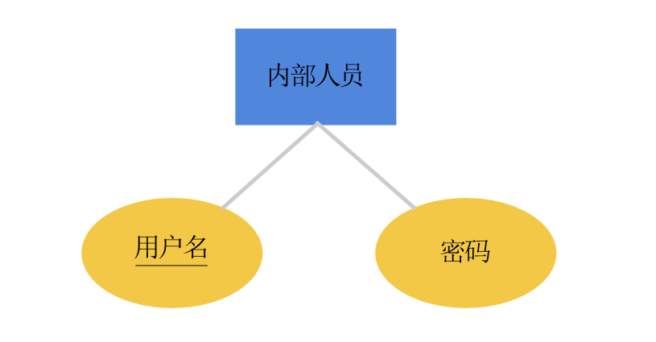
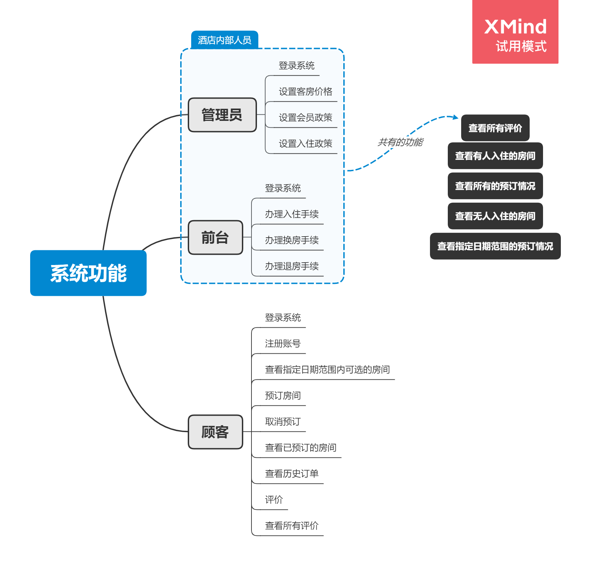
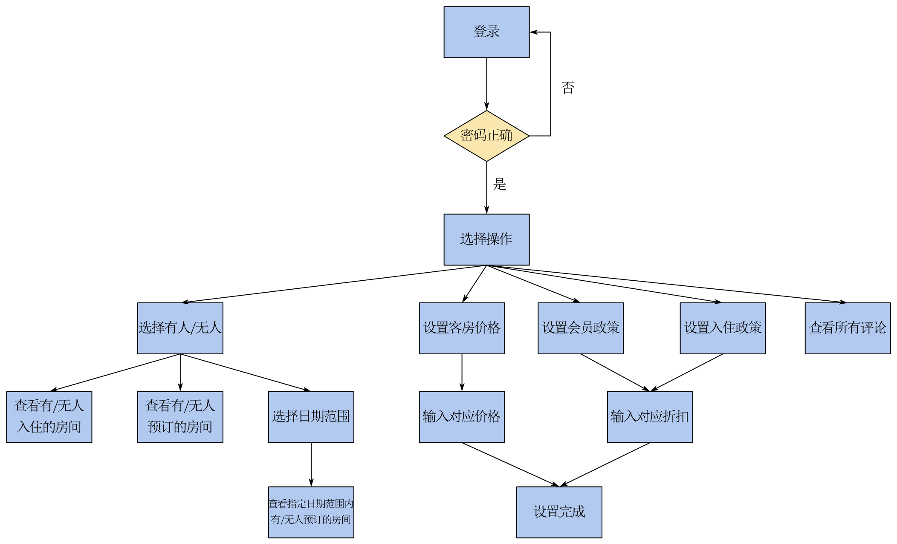
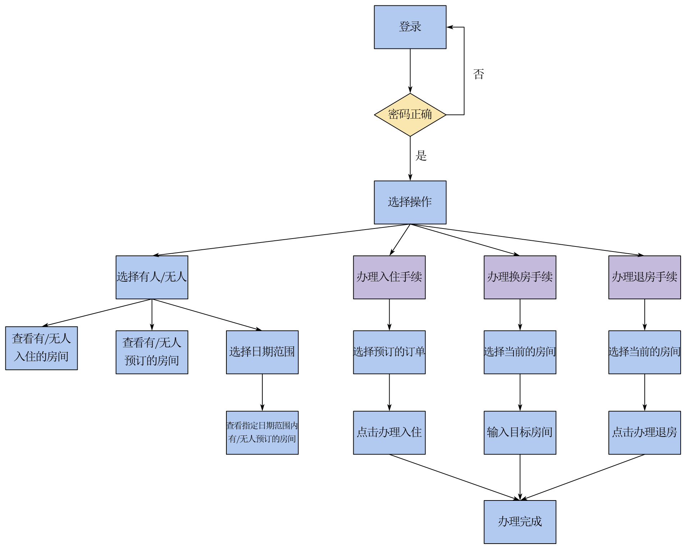
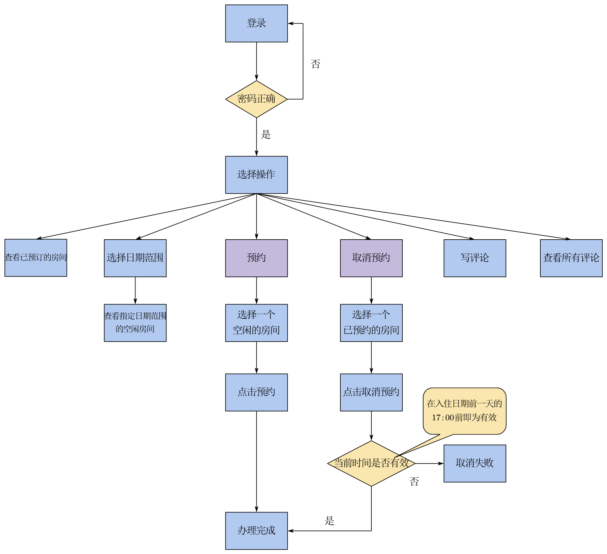

OOP-酒店管理系统
题目
某酒店有客房若干间，其中客房分为不同等级，如豪华、标准、普通等，客房床位数也不同。例如，豪华套房有4个床位，400元/晚；标准客房2个床位，200元/晚；普通客房1个床位，100元/晚。
顾客分金卡会员、银卡会员、普通会员及非会员，其享受的折扣不同。例如，金卡会员可享受8折优惠，银卡会员可享受9折优惠，普通会员享受95折优惠，非会员不享受优惠。
当顾客连续入住多天时，也可享受一定的折扣。例如，当顾客连续入住2 - 4晚时，可享受9折优惠；连续入住5 - 8晚时，可享受85折优惠；连续入住9晚以上时，可享受8折优惠。
采用面向对象的思想，建立系统中清晰的类，分析和定义各个类，每个类中要有各自的属性和方法，并开发一套客房管理系统，实现如下功能：
（1） 管理员：以管理员身份登录系统，查询当前客房入住及预订情况，并设置客房价格、顾客优惠政策等；
（2） 酒店前台：以前台身份登录系统，查询当前客房入住及预订情况，为顾客办理入住、退房、换房等服务；顾客退房后为顾客计算消费金额并收费；
（3） 顾客：可以注册和登录系统，用户在查找到心仪的客房后，登录酒店客房管理系统可提交订单实现客房预订；未入住酒店前1天，可取消客房预订；顾客入住退房后可评论。
题目分析
题目要求我们采用面向对象的思想，为管理员、酒店前台与顾客开发一套酒店管理系统。管理员需要能够登陆系统、查看客房的入住与预定情况、修改客房的价格以及顾客的优惠政策；前台也需要能够登录系统、查看客房的入住与预定情况，还需要能够为顾客办理手续和收费；而顾客需要能够进行注册与登录、选房、预订与评论等操作。
分析题目可以发现，不同人员的操作存在着一些共性，他们都需要登陆系统、也都可以查看评论。虽然所有人都可以要查看客房的情况，但内部人员和顾客的查看操作是不同的：内部人员需要能够查看当前入住情况、所有的预订情况和指定日期范围的预订情况，而顾客只需看到他们指定日期范围内空闲的客房情况。另外，顾客优惠的政策是所有人可见的，但却只有管理员可以更改。
要设计一个上述的管理系统，除了业务逻辑，还需要有交互式的界面，本次大作业使用了Qt Creator进行界面设计。除此之外，我们还需要存储人员及客房的相关信息，在这里我们采用Mysql的本地数据库进行存储。
类图设计及说明
业务逻辑类图
classDiagram
User <|-- Insider
User <|-- Customer
Insider <|-- Manager
Insider <|-- Reception
class User {
<<abstract>>
+checkAllReviews() QsqlQuery
+login()* int
-QString account
-QString password
}
class Customer {
+login() int
+getAvailRooms(const QDate&, const QDate&) QSqlQuery
+book(const QString&, const QDate&, const QDate&) bool
+cancelBook(const QString&, const QDate&) bool
+getHistoricalOrders() QSqlQuery
+review(const QString&, const QDate&, const QString&) bool
+signUp(const QString&, const QString&) bool
}
class Insider {
+login() int
+getCheckInInfo(bool) QSqlQuery
+getBookInfo(bool) QSqlQuery
+getBookInfo(const QDate&, const QDate&, bool) QSqlQuery
}
class Manager {
+setRoomPrice(char, size_t) void
+setMemberDiscount(char level, double newDicount) void
+setDayDiscount(size_t lo, size_t hi, double newDiscount) bool
}
class Reception {
+checkin(const QString&, const QString&, const QDate&) bool
+changeRoom(const QString&, const QString&) bool
+checkOut(const QString&, const QString&, const QDate&) bool
+calCost(const QString&, const QString&, size_t) double
}由上述分析，我们可以将业务逻辑抽象表示为以下六个类：用户抽象类User，内部人员类Insider，顾客类Customer，管理员类Manager，前台类Reception和优惠政策类Policy（后文均用类名指代）。
Manager类与Reception类继承Insider类，而Insider类与Customer类又都是User类的子类。User类中有account和password两个私有变量，即每个登录到管理系统的人员都有自己的账号与密码。因为内部人员和顾客的账号密码存在不同的数据库表中，所以User还有一个抽象函数login()，而Insider和Customer分别重写了它。
系统类图
classDiagram
LoginForm ..> CustomerForm
LoginForm ..> ManagerForm
LoginForm ..> ReceptionForm
ManagerForm *-- Manager
ReceptionForm *-- Reception
CustomerForm *-- Customer
Manager o-- DatabaseUtils
Reception o-- DatabaseUtils
Customer o-- DatabaseUtils
class LoginForm {
+on_signInButton_clicked() void
+on_registerButton_clicked() void
-CustomerWin *customerWin;
-ManagerWin *managerWin;
-ReceptionWin *receptionWin;
}
class CustomerForm {
+on_book_clicked() void
+on_getRooms_clicked() void
+on_bookedRooms_clicked() void
+on_cancelBook_clicked() void
+on_historicalOrders_clicked() void
+on_writeReview_clicked() void
+on_allReviews_clicked() void
+on_tableView_clicked(const QModelIndex &) void
-Customer customer;
-WriteReview *review;
}
class ManagerForm {
+on_checkinInfo_clicked() void
+on_allBookInfo_clicked() void
+on_checkInfo_clicked() void
+modify_clicked() void
+on_allReviews_clicked() void void
-Manager manager
-ModifyInfo *modifyInfo
}
class ReceptionForm {
+on_checkinInfo_clicked() void
+on_allBookInfo_clicked() void
+on_checkInfo_clicked() void
+on_checkin_clicked() void
+on_checkout_clicked() void
+on_changeRoom_clicked() void
+on_allReviews_clicked() void
+on_tableView_clicked(const QModelIndex &) void
-Reception reception
-ChangeRoom* changeRoom
}
class Customer {
}
class Manager {
}
class Reception {
}
class DatabaseUtils {
+connect() void
+close() void
+executeUpdate(const QString&, const QVariantList& args = QVariantList()) bool
+executeSelect(const QString&, const QVariantList& args = QVariantList()) QSqlQuery
}表示层有四个用户界面，初始是登陆界面LoginForm，根据账号的不同分别进入三个不同的业务处理界面：管理员的ManagerForm、酒店前台的ReceptionForm和顾客的CustomerForm。这三个界面有着不同的控件，对应着不同的槽函数，槽函数中调用了业务逻辑层中对应类的函数来完成业务的处理。而业务逻辑层中的处理有时需要访问数据库，这时就需要调用数据库访问帮助类DatabaseUtils来完成数据的增删查改。
E-R图设计及说明
（由于本门课是面向对象程序设计，数据库部分简略带过）
系统E-R图

一个顾客账号可以预订多个客房，且顾客可以对每个订单进行不同的评价。根据订单的进度，订单可能是以下状态的一种：已预订、已入住或已完成。
内部人员E-R图

内部人员的账号密码独立存在一个表中。
系统功能设计

实现流程
实现流程表示如下：
（注：紫色矩形表示的是操作的名称，蓝色矩形才是实际的操作）
管理员

前台

顾客
注：这里的有效时间是在题目的基础上，参考了现实中酒店的做法，设定为入住日期前一天17:00前。

问题及解决
类的继承关系不明
一开始没有insider这个类，因为以为查看房间情况的函数是通用的，只需
Manager、Reception与Customer各自重写即可，后来才发现内部人员的查看方式较为多样，需要一个内部人员类才行。订单状态不知如何处理
因为顾客入住酒店是有三种状态的：预订、入住与退房，一开始想建立三个联系表，当预订转为入住，就从预订表中删除并添加到入住表中；退房时，将从入住表中删除并添加到已完成订单表中。但后来通过与同学讨论，找到了更简单有效的方法，即只建立一个联系表，订单加上一个状态字段表示其状态。
政策是否应该抽象为类
一开始我将政策抽象为一个
Policy类，优惠政策为静态私有变量，所有人员可以通过其静态成员函数获取当前的政策，而Manager类是友元类，可以直接修改优惠政策。但后来我才发现这样有很大的问题，管理员通过成员函数修改Policy的静态私有变量是只在运行时有效的，当程序再次运行时又会恢复原样；且一个类全是静态函数与静态变量，似乎这个类也没有存在的必要。因此，我将Policy类删除，将优惠政策放入数据库中。
参考
本博客所有文章除特别声明外，均采用 CC BY-SA 4.0 协议 ，转载请注明出处！